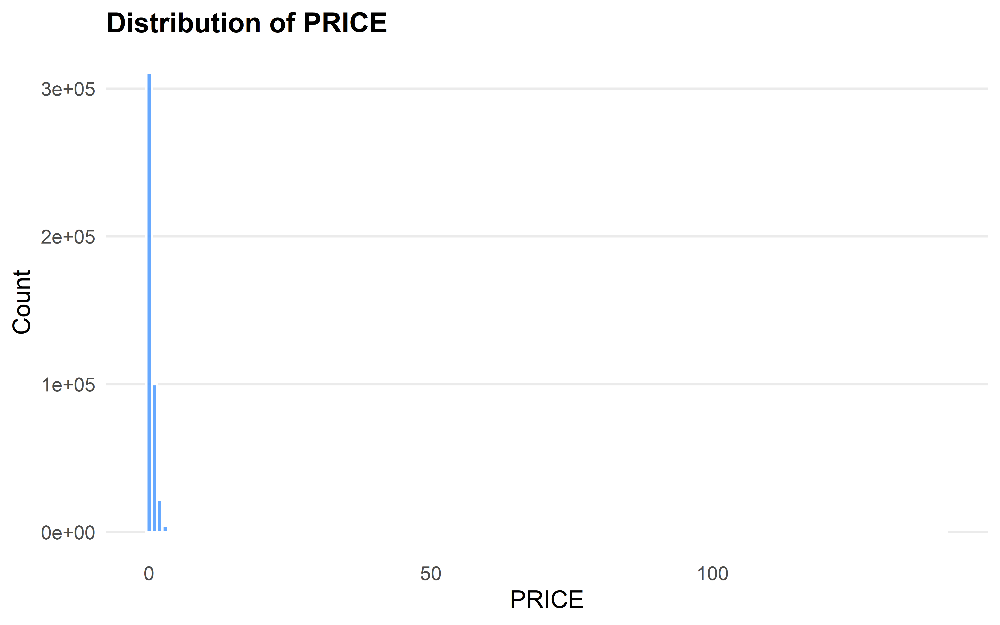
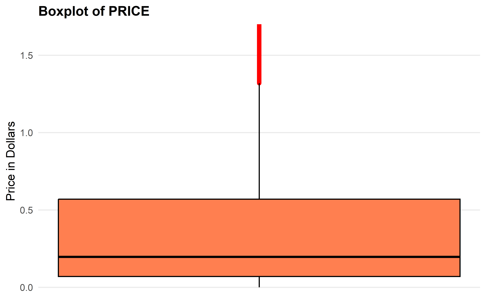
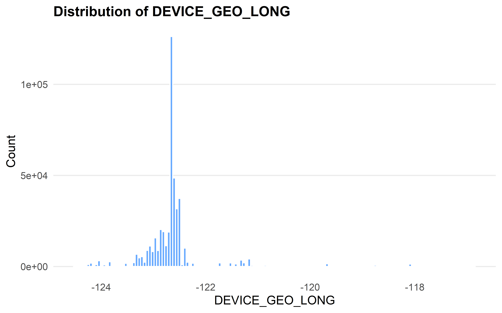
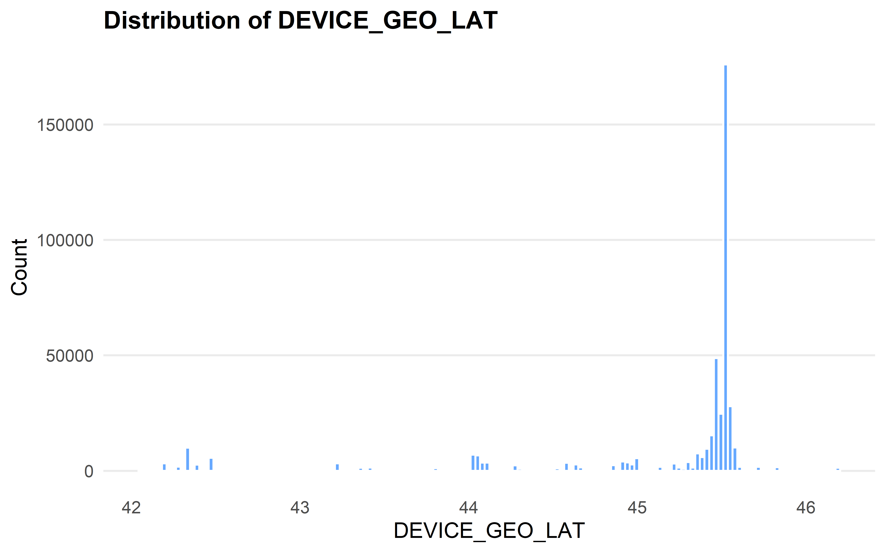
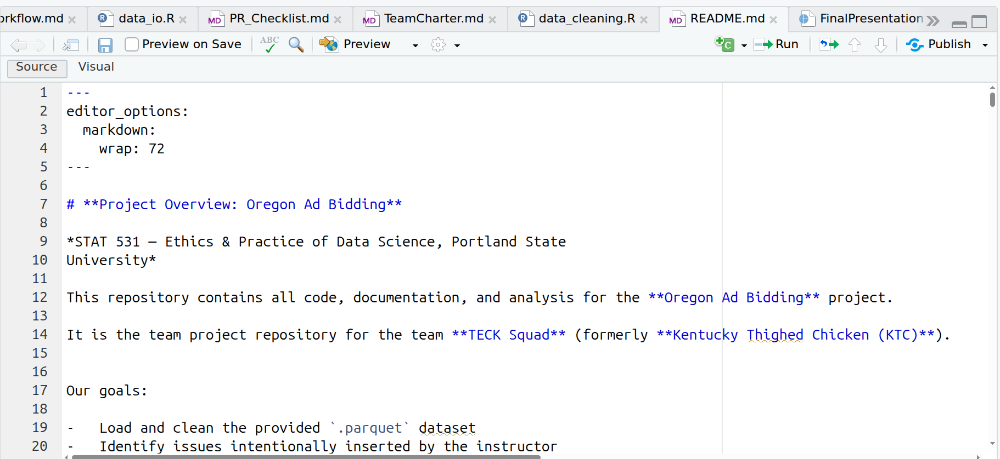
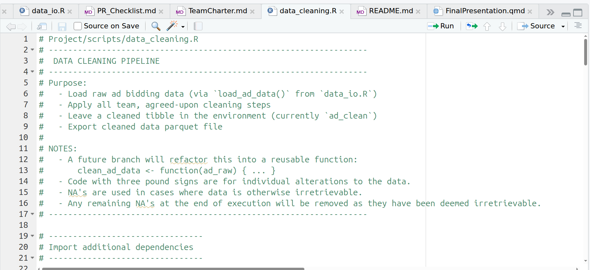
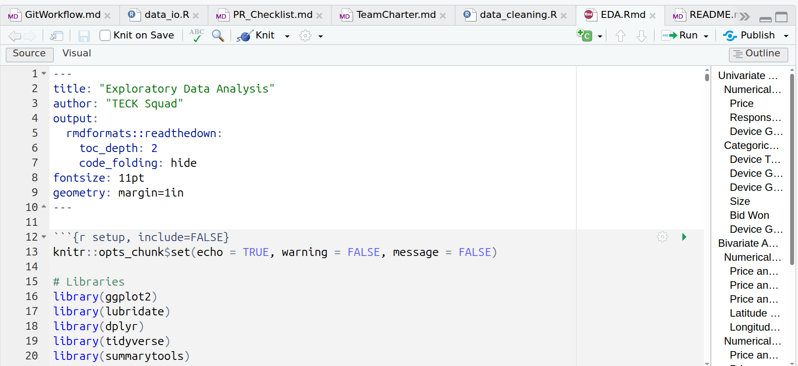

STAT 531 — Final Presentation
Oregon Ad Bidding: Data Cleaning, EDA, and Team Workflow
Introduction
- Project: Oregon Ad Bidding Analysis
- Team: TECK Squad — Chris G., Takeshi S., Esther T., Khloud Z.
- GitHub repository: https://github.com/etoobian/STAT531_Project/
- Summary: A collaborative workflow demonstrating data cleaning, reproducibility, and exploratory analysis on Oregon advertising auction data.
TECK Squad
- T — Takeshi
- E — Esther
- C — Chris
- K — Khloud
Previously known as KTC (Kentucky Thighed Chicken) before the team reformed.
The Data & Initial Plan
Dataset Context
- Parquet dataset of Oregon digital ad auctions:
- A prebid server handles online ad auctions where bidders submit CPM bids.
- Individual bidders may bid on multiple sizes
- Each row represents a bid within a prebid auction.
- Includes metadata such as:
- Timestamps
- Geolocation
- Device Type
Guiding Questions
What findings can we deduce from:
- Checking usage of individual device types by city?
To help us deduce to what extent does:
- Device type impact response time?
- Geographic location impact response time?
- Response time impact the bid (price)?
- By extension, geographic location impact bid (price)?
Why These Questions Matter
These questions will help us by:
- Providing us insight to how geospatial data can be utilized to uncover potential issues regarding latency, which can improve overall bidding procedure.
- How to accommodate different device types to ensure fair bidding procedures.
- General understanding of how certain predictors influence each other will prove beneficial when looking to maximize bid prices and potentially reduce or standardize a maximum response time.
Team Workflow & Roles
Roles & Responsibilities
- Chris — EDA, Visualizer, Guiding Question Refinement
- Takeshi — Data Cleaner, Scribe, Presentation Editor.
- Esther — GitHub/Project Coordinator, Data Cleaner.
- Khloud — Data Cleaner, Presentation Editor.
Coordination Tools
- GitHub: Checkout to Branch → PRs → Reviews → Merge.
- Jira/Kanban: Task/Subtask Alloting, Progress Tracking.
- Discord: Quick Updates, Online Meeting Location.
- Commit Habits: Consistent Commits, Detailed Messages.
Through the combination of Github, Jira, and a rigid commit/PR routine outlined by checklists/workflows that we agreed upon ensured we ran into minimal issues with the completion of this project.
Data Cleaning Process
Key Issues Identified
- Text and Value Inconsistencies.
- Implausible Values and Sentinels.
- Missing Information.
- Duplicates and Keys.
Issue 1:
Type and Value Inconsistencies
Description
The type refers to the data type of a column and value refers to individual rows seen within the data set. Throughout the data set, we have encountered many inconsistencies, which for some, are distinguished using the data dictionary provided by the client.
Examples
Examples of Type Inconsistencies:
- The PRICE column was of the character type.
- The RESPONSE_TIME column was of the character type.
Examples of Value Inconsistencies:
- The TIMESTAMP column has three different formats:
- “YYYY/MM/DD…”, “YYYY-MM-DD…” and “NA…”
- The RESPONSE_TIME column had different prefix delimeters:
- “RESPONSE_TIME:” and “RESSPONSE_TIME:”.
Why It Matters
Issues pertaining to certain columns, like PRICE, were crucial to remedy because:
- These columns are crucial for exploring the guiding questions.
- Directly contradicted the data dictionary provided by the client.
Cleaning Strategy
- Principle: Convert columns to their intended type and enforce sufficient formatting.
- Implementation: Compare types to data dictionary; remove delimiters; alleviate potential points of coercion; convert to correct data type.
- Example: Verify Data Type of PRICE → Identify Points of Coercion → Alleviate Given Points → Convert PRICE to the Numeric Data Type.
Issue 2:
Implausible Values and Sentinels
Description
Implausible values are values that otherwise, through the inherent existence of the respective column, can’t exist. In most cases, sentinel values are also made to be implausible values, and therefore, there is also a need to distinguish between the two.
Examples
Examples of Implausible Values:
- The PRICE column contains negative values.
- The DEVICE_GEO_LONG column contains values that exist outside of Oregon’s border.
Sentinels:
- The generic sentinel value is -999, seen in columns such as:
- PRICE
- DEVICE_GEO_ZIP
Why It Matters
Similar to the prior issue, with some additions:
- These columns are crucial for the exploration of the guiding questions.
- The inclusion of implausible and/or sentinel values can greatly skew any final conclusions.
Cleaning Strategy
- Principle: Correct, if possible, or remove sentinels and implausible values.
- Implementation: Identify firm restrictions/bounds and impossible values; identify potential sentinel values; check respective values with bounds in mind; recover, if possible, or remove rows with implausible/sentinel values.
- Example: Verify that PRICE is Positive → Identify Negative Values → Delineate Between Sentinel and Implausible → Verify that Sentinel Values Can’t be Recovered → Verify Distribution of Remaining Implausible Values to Test Recoverability → Recover Values.
Issue 3:
Missing Values
Description
Missing values refers to fields recorded as NA or left blank across one or more rows and/or columns. Furthermore, there is a need to distinguish if these missing values are a feature of the dataset or bad data.
Examples
Examples of bad data entries:
- The TIMESTAMPS column contains a format that leaves an NA in place of the date.
- The sentinel values seen in the PRICE column are irretrievable, and are no different to NA values.
Why It Matters
These NA values can directly impact the analysis of certain columns, and in the case that the data is retrievable, even more so, because:
- These NA values reduce the number of rows we can analyze.
- Creates potential bias if the present missingness is systematic.
- Limits our ability to answer key guiding questions.
Cleaning Strategy
- Principle: Identify missing values and analyze for patterns and irretrievability.
- Implementation: Check for NAs; test the individual column impact on overall dataset; choose one of three options:
- Drop the values.
- Imputation.
- Leave as is.
- Example: Identify PRICE Sentinels (NAs) → Determine Retrievability and Extent → Remove Sentinels.
Issue 4:
Duplicates and Keys
Description
Duplicate rows contain the exact same information for every single column. Keys pertain to the ability to uniquely identify rows given the least amount of unique columns.
Why It Matters
Having duplicate data inflates the amount of rows, which can skew results.
It is intended for there to be a specific key given by the data dictionary, but is not present in the data.
Cleaning Strategy
- Principle: Remove rows with identical values in each column.
- Implementation: Remove duplicates.
- Example: Remove Duplicates by Taking Uniqueness.
Reproducibility & Workflow
Git + File Structure
- …/STAT531_Project/Project (root):
- data/ (local, git-ignored)
- scripts/ (modular R scripts)
- notebooks/ (Rmd/knitted files)
- results/ (saved plots)
- Snake case naming convention utilized (excluding team documents).
- Modularity achieved through the distinction of tasks.
Documentation Practices
- Quarto utilized for final presentation.
- R Markdown for analysis steps and lab-style documentation.
- Commit history shows frequent contributions from all team members.
- Pull requestss used for review and discussion of content.
Team Documents
- …/STAT531_Project/Project (root):
- GitWorkflow.md
- PR_Checklist.md
- TeamCharter.md
- TeamCheckInEntries/ (check in folder)
- TeamCheckInTeamplate.md
Exploratory Data Analysis
Missinginess Heatmap
 {width=“60%” fig-align=“center”}
{width=“60%” fig-align=“center”}
Overview Distribution (Price histogram)
 {width=“60%” fig-align=“center”}
Overview Distribution (Price boxplot)
 {width=“60%” fig-align=“center”}
Overview Distribution (Device Type boxplot)
 {width=“60%” fig-align=“center”}
{width=“60%” fig-align=“center”}
Overview Distribution (Response Time)
 {width=“60%” fig-align=“center”}
{width=“60%” fig-align=“center”}
Overview Distribution (Longitude histogram)
 {width=“60%” fig-align=“center”}
Overview Distribution (Latitude histogram)
 {width=“60%” fig-align=“center”}
Deep Dive: Guiding Question 1
City to Device Type to Response Time
Does a difference in device types vary across cities, and subsequently relate to response time?
This line of thinking could provide us with insight to how geospatial data can be utilized to uncover potential issues regarding latency, which can improve overall bidding procedure.
Device Type by City
 {width=“60%” fig-align=“center”}
{width=“60%” fig-align=“center”}
Response Time by Device Type
 {width=“60%” fig-align=“center”}
{width=“60%” fig-align=“center”}
Response Time by City
 {width=“60%” fig-align=“center”}
{width=“60%” fig-align=“center”}
Interpretation
- The majority of cities encompassed by the data were taken from personal computers, but some cities, like Medford and Portland were dominated by tablets.
- We see that tablets and personal computers have the lowest median latency, which could indicate better connectivity to these devices.
- Despite a high concentration of bid count in major cities like Portland, we see a relatively low median latency period. However, we see that some cities further away from metropolitan areas have comparitively higher median response times.
Deep Dive: Guiding Question 2
Geospatial Location to Response Time to Price
To what extent does geospatial location impact response time, and how does response time impact bid price?
A clearer image can be painted through the usage of the longitudinal and latitudinal points when looking to explore response time as an indicator of bid price.
Latitude by Response Time
 {width=“60%” fig-align=“center”}
{width=“60%” fig-align=“center”}
Longitude by Response Time
 {width=“60%” fig-align=“center”}
{width=“60%” fig-align=“center”}
Price by Latitude
 {width=“60%” fig-align=“center”}
{width=“60%” fig-align=“center”}
Price by Longitude
 {width=“60%” fig-align=“center”}
{width=“60%” fig-align=“center”}
Price by Response Time
 {width=“60%” fig-align=“center”}
{width=“60%” fig-align=“center”}
Interpretation
- Though the median response time for Portland was relatively low, we notice that the variability in the response time of the latitudinal range surrounding Portland is much greater than other cities. We notice the same for longitude. This could be as a result of higher traffic, or the fact that many cities lie East and South of Portland.
- We notice lower prices around the longitudinal and latitudinal values surrounding Portland, which could indicate a lower average price seen in major cities.
Interpretation Cont.
- The general trend of bid price with respect to response time is downwards, noting that bids with faster response time tends to have higher CPM values. There are notable dips at roughly 350ms and 700ms.
Key Findings
Summary of Insights
- Latency between device types are roughly the same.
- Latency decreases in greater populated longitudinal/latitudinal rows, but has increased variability.
- Bid price decreases as response time increases.
- Geospatial location impacts price.
- Area of high concentration of bids have moderate median bid prices.
Collaboration Reflection
What Went Well
- Effective use of GitHub, branches, and PRs.
- Clear division of labor and ownership.
- Jira/Kanban proved helpful for tracking progress.
Challenges and Lessons
- Merge conflicts and how they were resolved.
- Aligning on cleaning decisions and documentation style.
- Time management and coordination across schedules.
- Learned not to rebase… (Takeshi).
GitHub Repo Content Confirmation
Does the repository contain:
- Clean and informative README.md
- Data-cleaning scripts
- EDA notebooks (rmd and/or qmd)
- Clear folder structure: data, scripts, results…
- Kanban board snapshot (exported image or link)
It does.
README.md
data_cleaning.R
EDA.R
File Structure